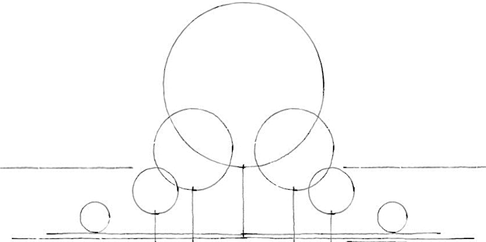

Greenspace Template
Below is a blank template of the structural elements diagram, which you can use to plan or document your own greenspace. This template provides a basic framework for mapping the layers and features of your garden design.

To download the greenspace checklist, which will help you assess and record your greenspace's characteristics, click the button below.